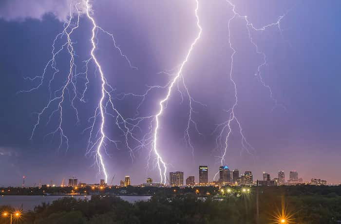

Tampa Florida is my favorite city because that is where I served my mission. All year round, Tampa stayed really warm, it would occasionally get cold during the wintertime but for the most part it felt amazing. One of the things I loved about Florida is that it is the lightning capital of the United States and to say the lightning storms were cool, would be an understatement. While I was there I was able to witness some of the coolest lightning storms and it was breathtaking because in Utah, you don't really get to see that. For the majority, lightning storms would happen regularly but the ones that took your breathe away would happen maybe once a week or longer.
